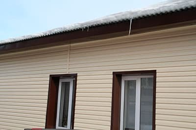

Сайдинг из металла в современном строительстве занимает особое место среди материалов для отделки помещений. Этот материал обладает универсальной областью применения, насчитывает множество разнообразных фактур и оттенков, отличается качественными параметрами и доступной ценой.
Что представляет собой сайдинг
В первоначальном значении словом «сайдинг» называли специализированный тип доски, который применяли для обшивки стен, позднее данный термин стали применять ко всем материалам для монтажа навесных фасадов, в число прямых функций которых входит:
- Защита фасада от погодных воздействий;
- Улучшение внешнего вида стен.
В современном строительстве наблюдаются тенденции прагматичного подхода к использованию отделочных материалов. Как большие компании, так и частные лица при строительстве стараются выбирать наиболее практичные материалы.
Наибольшую популярность, как правило, приобретают материалы для отделки, отличающиеся:
- Высоким уровнем прочности и долговечности;
- Малым весом;
- Привлекательный внешним вид;
- Доступной ценой.
Металлический сайдинг попал в перечень материалов, которым присущи все указанные технические параметры. Большую популярность данный отделочный материал приобрел благодаря высоким качественным показателям изделий и эстетичности – обшивку из металлосайдинга подчас непросто отличить от обшивки из натуральной доски или камня.
Производство сайдинга, его виды
Металлосайдинг изготавливается из стальных листов по технологии холодного металлопроката. С точки зрения конструкции, каждая панель сайдинга данного типа является профилированным листом с крепежными прорезями и замковым соединением. В качестве дополнительной защиты стали, а также декоративного эффекта внешняя сторона панелей сайдинга покрыта полимерным составом, либо краской.
С точки зрения структуры, данное изделие состоит из множества слоев. Среди которых выделяется стальной слой – основа, с нанесенными на нее слоями из грунтовки, покраски, цинка.
Основные параметры, размеры и вес листов металлосайдинга
Производится стальной сайдинг листами, длина которых может достигать 4 000 мм (4 метра), ширина варьируется в диапазоне от 200 до 250 мм (0,2-0,25 метра), толщина готового изделия, согласно стандартам, варьируется в диапазоне от 0,48 до 0,61 мм. При таких показателях длины, ширины, высоты квадратный метр металлосайдинга имеет массу от 2,4 до 3,5 килограмма.
Одним из преимуществ при приобретении сайдинга из металла является возможность купить строго необходимое количество материала, так как кратность изделия равна единице.
В продаже можно обнаружить сайдинг нескольких видов:
- Гладкий, без отверстий. Прорези для крепления высверливаются в процессе строительных работ;
- Перфорированный – вариант сайдинга с уже готовыми отверстиями под крепеж.
Несмотря на то, что перфорированные модели более удобны в процессе монтажа, большее распространение получил именно гладкий сайдинг, так как он отличается большей универсальностью.
В качестве основы при производстве сайдинга могут применяться разные металлы:
- Сталь – из данного металла производятся наиболее прочные и долговечные модели, способные сопротивляться широкому спектру механических воздействий;
- Алюминий – панели из алюминия обладают меньшей массой относительно стальных, при этом более устойчивы к коррозии.
В зависимости от области применения сайдинга также можно выделить некоторые отличия изделий:
- Сайдинг для отделки цоколя, производится таким образом, что отличается от других типов сайдинга более высокими показателями прочности, длительности эксплуатации, стойкости к повышенной влажности и температурным перепадам. Панели цокольного металлосайдинга производятся прямоугольной форы, обычно они стилизованы под кирпич или камень. Окраска, как правило, темных тонов. Применять цокольный металлосайдинг можно также и при облицовке всего фасада здания.
- Фасадный металлосайдинг производится таким образом, чтобы соответствовать основным требованиям эксплуатации при монтаже на наружных стенах помещений. Чаще всего он стилизован под популярные современные материалы для облицовки.
- Потолочный металлосайдинг предназначен для использования на поверхности потолков. Нередко, такой тип сайдинга применяется при облицовке потолков в беседках, гаражах и подобных постройках.
В качестве дополнения к панелям сайдинга крупные изготовители производят дополнительны элементы:
- Отливы;
- Откосы;
- Элементы для оформления углов и торцов облицовки;
- И прочие доборные элементы сайдинга.
Свойства металлосайдинга
Как правило, гарантированный срок эксплуатации сайдинга из металла – это 20-30 лет, на практике фасад, выполненный из данного материала способен прослужить до 50 лет. Фасад, смонтированный из описанных панелей, не нуждается в каком-либо специфическом уходе, а все загрязнения можно удалить обычной водой с мылом.
Большой спектр сопутствующих комплектующих, доборных элементов для сайдинга позволяет выполнить монтаж на фасадах любой формы, в том числе и очень сложных.
Разнообразие оттенков и фактур позволяет выполнить фасад в задуманном стиле. Например, стилизовать помещение под бревенчатую или каменную постройку.
Помимо этого металлосайдинг отличается и другими свойствами:
- Обеспечивает вентиляцию смонтированного фасада, стен помещения и слоя утеплителя;
- Устойчив к воздействию солнечных лучей;
- Сохраняет основные технические параметры неизменными в широком спектре температур;
- Позволяет построить утепленный фасад.
Где применяют металлосайдинг
Отделку фасадов помещений сайдингом из металла предпочитают вполне мотивированно, наиболее актуально применение металлосайдинга для помещений со сложной формой стен, большим количеством проемов разнообразного назначения.
Использовать данный материал для отделки также целесообразно, когда есть необходимость оформить фасады нескольких помещений в едином стиле, либо облагородить внешний вид помещения старой застройки.
Незаменим сайдинг из металла, когда к постройкам, на которые монтируется навесной фасад, предъявляются строгие требования пожарной безопасности, прочности и сопротивляемости атмосферным воздействиям.
Металлосайдинг алматы
Источник: ferum.pro